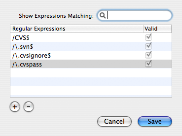

File Filters
File Filters (available from the “Contents” and “Scripts” tabs of the PackageMaker user interface) allow the package author to specify regular expressions to filter out files/directories from the root. When building the package, any files in the root matching these expressions will not be added to the package.
 The File Filters sheetYou can test your regular expressions by typing a file path or file path fragment into the search field. Matching expressions will be displayed in the table.
These regular expressions will be matched against the entire path of the file in the root. For example, a package like the following:
- My Great App.app
- Contents
Info.plist
- MacOS
My Great App
- Resources
- English.lproj
- MainMenu.nib
classes.nib
info.nib
keyedobjects.nib
Would have the following paths:
./My Great App.app ./My Great App.app/Contents ./My Great App.app/Contents/Info.plist ./My Great App.app/Contents/MacOS ./My Great App.app/Contents/MacOS/My Great App ./My Great App.app/Contents/Resources ./My Great App.app/Contents/Resources/English.lproj ./My Great App.app/Contents/Resources/English.lproj/MainMenu.nib ./My Great App.app/Contents/Resources/English.lproj/MainMenu.nib/classes.nib ./My Great App.app/Contents/Resources/English.lproj/MainMenu.nib/info.nib ./My Great App.app/Contents/Resources/English.lproj/MainMenu.nib/keyedobjects.nib
Generally, you'll want to match the last path component. This can be done by anchoring the regular expression to the end of the string using the $ modifier (as seen in the built-in regular expressions). Once a directory has been filtered, all files within the directory will be filtered as well.